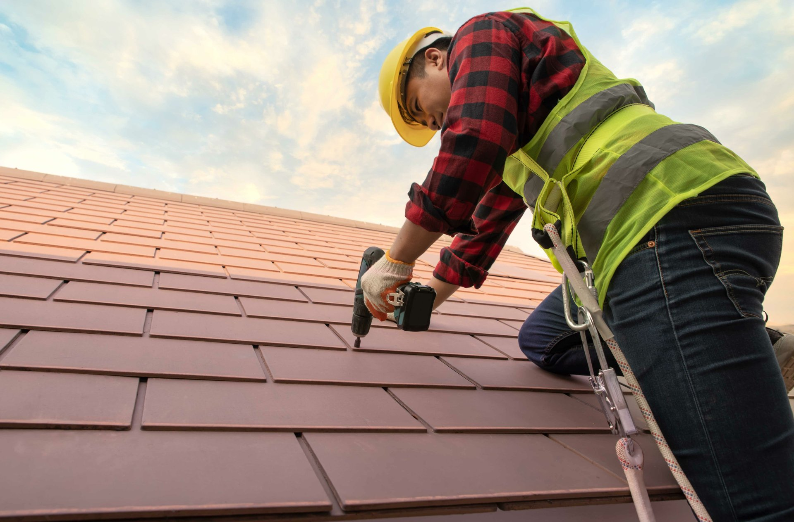

Steildach & Ziegel
Neueindeckung, die dicht hält
Ob Neubau oder Umdeckung: Wir decken Ihr Steildach fachgerecht mit Ziegel oder Dachstein ein · sturmsicher befestigt, sauber verlegt und langlebig. Auf Wunsch in verschiedenen Farben und Formen passend zu Ihrem Haus.
NeueindeckungUmdeckungZiegel & DachsteinSturmsicherung